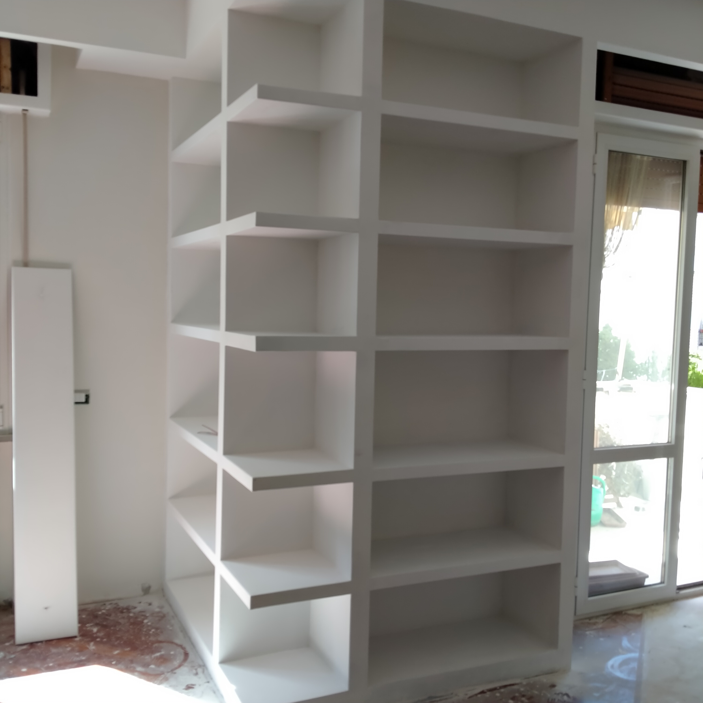
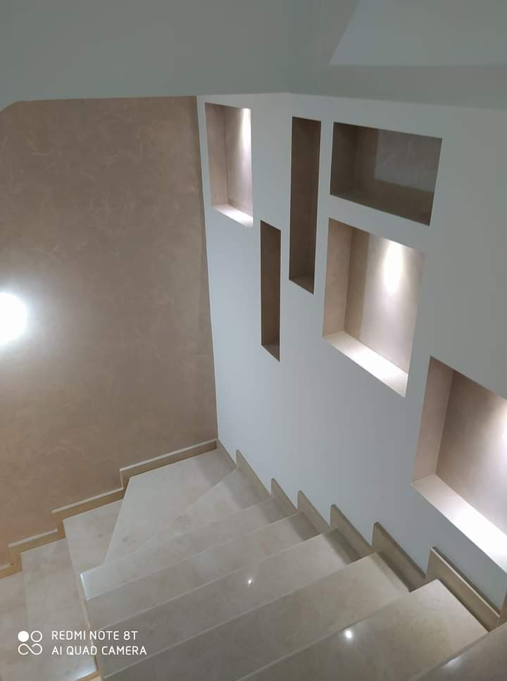
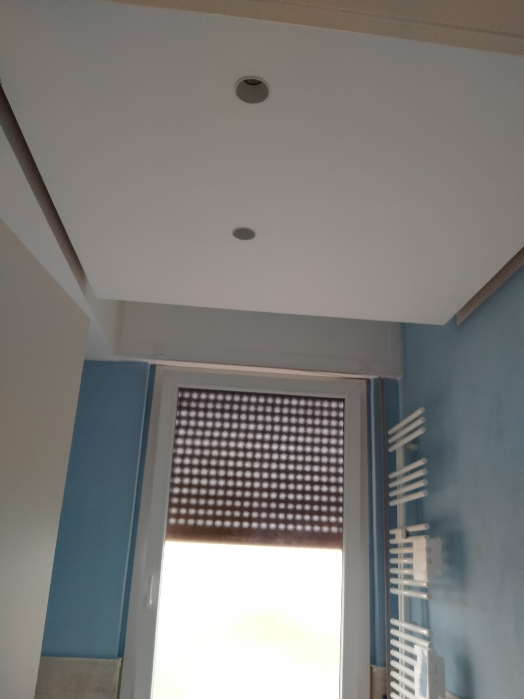
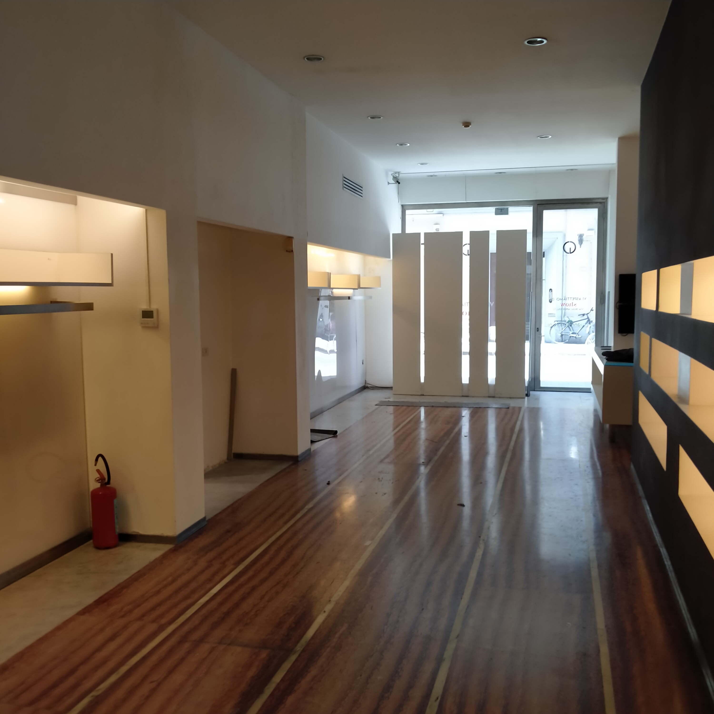
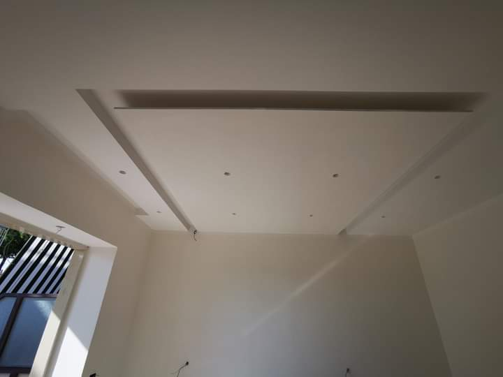
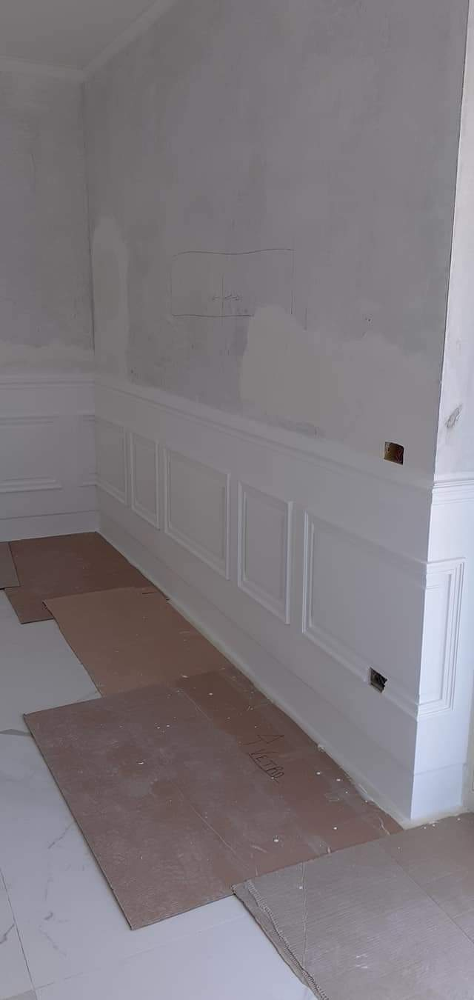

Oltre 30 anni di esperienza in imbiancature interne ed esterne e lavori in cartongesso. Operiamo a Livorno, Pisa e provincia con qualità e professionalità.
Richiedi Preventivo Chiama OraStefanini Imbiancature è specializzata in lavori di imbiancatura e cartongesso a Livorno e Pisa. Realizziamo interventi per case, uffici e attività commerciali con grande attenzione ai dettagli.






📞 Telefono: INSERISCI NUMERO
📍 Zona: Livorno e Pisa
✉️ Email: INSERISCI EMAIL